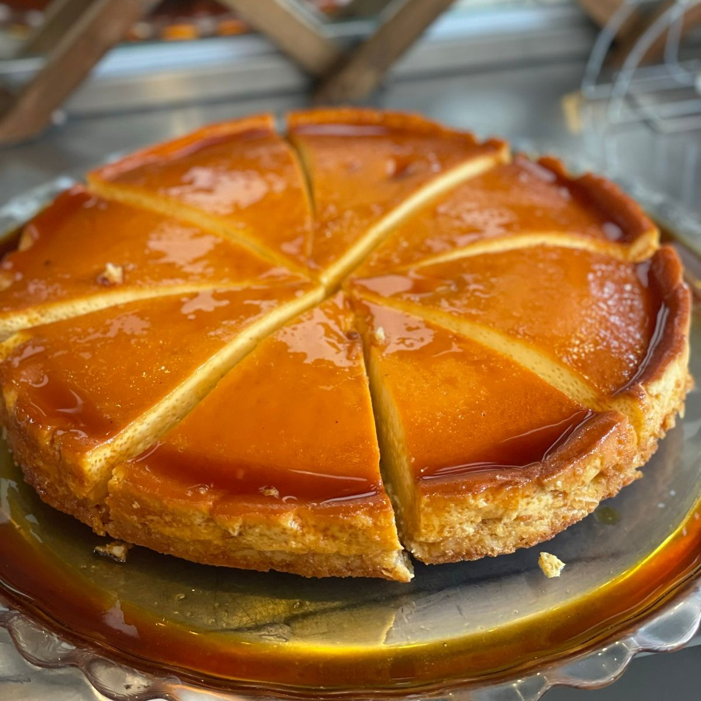
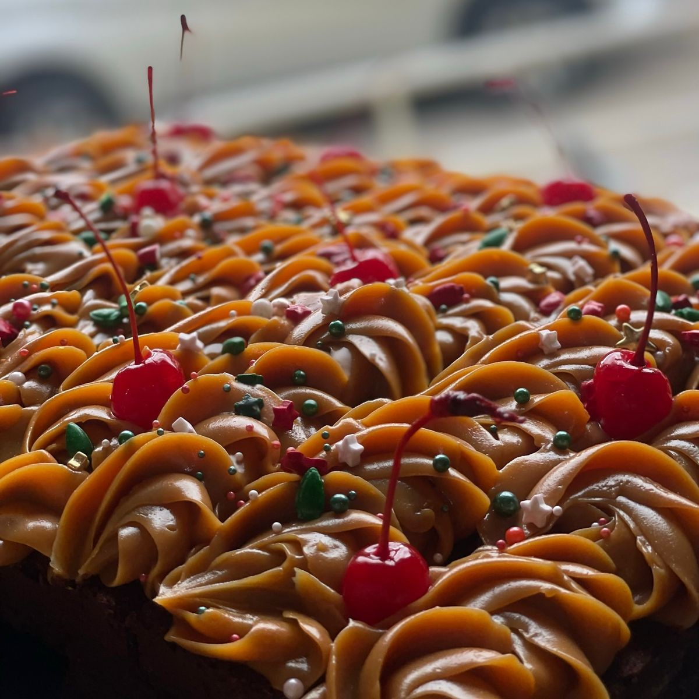
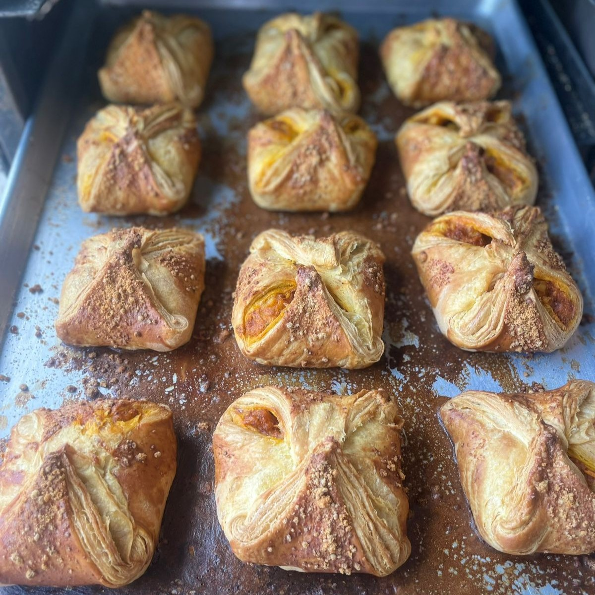

Los 5 productos más populares
En nuestra panadería, cada día horneamos con amor y tradición. Hoy queremos compartirte los cinco productos que más enamoran a nuestros clientes. ¿Ya los probaste todos?
1-Tres Leches: Un clásico irresistible
El pastel tres leches es un ícono de la repostería latinoamericana, y el nuestro destaca por su esponjosidad y equilibrio perfecto entre las tres leches: evaporada, condensada y crema de leche. Lo servimos bien frío, con una cobertura ligera de merengue o chantilly y, a veces, un toque de canela o frutas frescas por encima. Ideal para cualquier celebración… o para darse un gusto en cualquier momento.

2-Flan de Coco: Dulzura con sabor tropical
Este postre combina la suavidad del flan tradicional con el sabor único del coco rallado natural. Nuestro flan de coco tiene una textura cremosa que se deshace en la boca, con un caramelo dorado que le da el toque justo de dulzura. Perfecto para quienes aman los sabores caribeños y buscan un postre ligero pero memorable.
3-Queque de Chocolate: Puro placer
El queque de chocolate es uno de los favoritos de nuestros clientes más golosos. Usamos cacao puro de alta calidad y lo horneamos hasta obtener una textura húmeda y esponjosa. Algunos días lo encontrarás con cobertura de ganache, chispas de chocolate o relleno de crema. Acompañado de una taza de café caliente, es simplemente perfecto.
4-Enchiladas: Crujientes y llenas de sabor
Estas enchiladas, un pastelito de pan hojaldrado relleno con puré de papa sazonado, ligeramente picante, con un toque único. Se hornean hasta dorar, dejando el exterior crujiente y el interior cremoso y especiado. Un clásico que despierta memorias y que siempre se agota.
5. Pupusas: Pan relleno con queso azucarado
Nuestras pupusas dulces son panecillos suaves y ligeramente dorados, rellenos de queso rallado mezclado con azúcar, creando un contraste perfecto entre el pan y el relleno. Calientitas son aún más deliciosas, ya que el queso se funde y el sabor se intensifica. Un clásico de la panadería tradicional que no todos conocen… pero todos repiten.